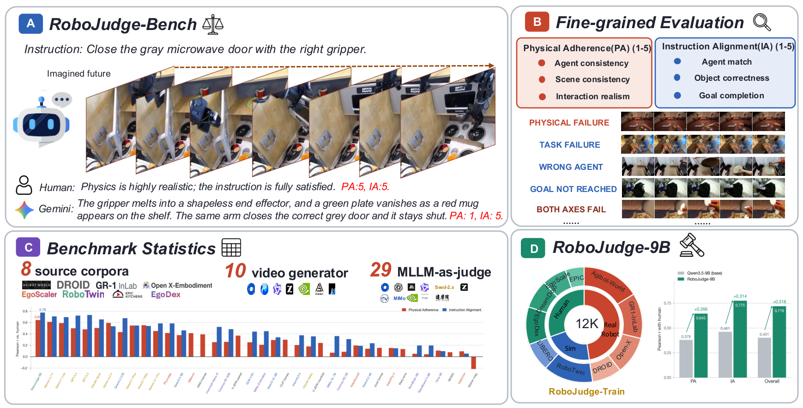

Physical AdherencePA 4 / 5
Does the imagined world preserve entities, scenes, contact, and plausible motion?
Multimodal language models as judges for embodied video generation—evaluated and trained against human Physical Adherence and Instruction Alignment ratings.
Does the imagined world preserve entities, scenes, contact, and plausible motion?
Does the correct agent act on the correct object and complete the instructed goal?
RoboJudge-Bench measures agreement with expert-adjudicated human ratings across 8 source corpora and 10 video generators. RoboJudge-Train scales the same rubric to 12,351 videos for supervised and reinforcement learning.

A rollout can move plausibly while performing the wrong task—or reach the requested state through physically broken dynamics. PA and IA make that distinction explicit.
Evaluated independently of the instruction.
Evaluated against the instruction and initial scene.
Pearson correlation with the final human ratings. The release includes the exact predictions, evaluation script, and paired cluster-bootstrap analysis.
Training and inference code live with the exact prompts, labels, predictions, metrics, checkpoint manifests, and environment files.
SFT and RL recipes, inference launchers, evaluators, and deterministic bootstrap analysis.
Training metadata, final benchmark labels, and the public video assets referenced by both splits.
The final SFT+RL model with configuration, tokenizer, processor, and verified weight hashes.
A 22 MB ZIP with ten original test videos, instructions, PA/IA scores, and diagnostic sub-scores.
Clone the repository, install the environment, download the public checkpoint, and point the inference launcher to local videos.
git clone https://github.com/SiyuanMaCS/robojudge-iclr2027.git
cd robojudge-iclr2027
pip install -r requirements.txt
hf download HuggingFriends/robojudge-iclr2027-checkpoints \
--repo-type model --include "final_rl_200step/*" \
--local-dir checkpoints_hf
CKPT=checkpoints_hf/final_rl_200step \
DATA_ROOT=/path/to/videos \
OUT=outputs/predictions.jsonl \
bash code/run_inference.sh